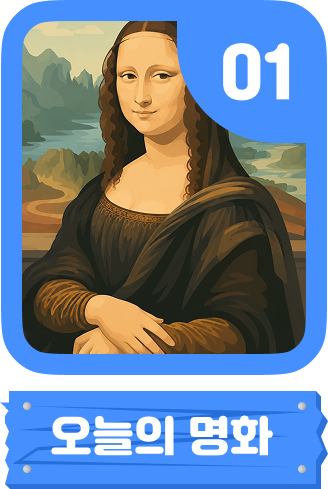
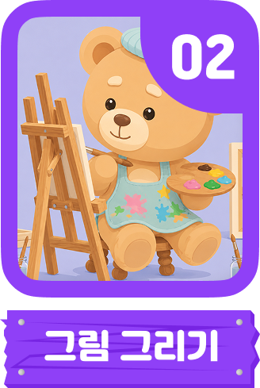
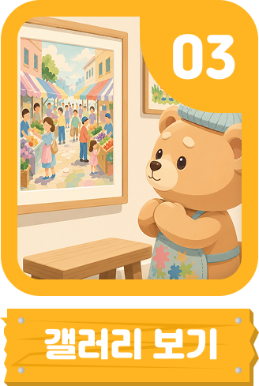
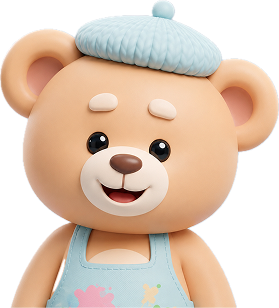
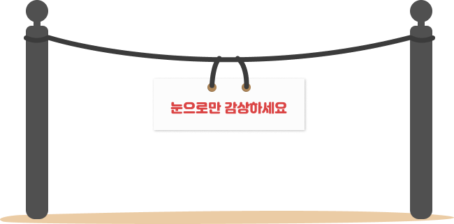
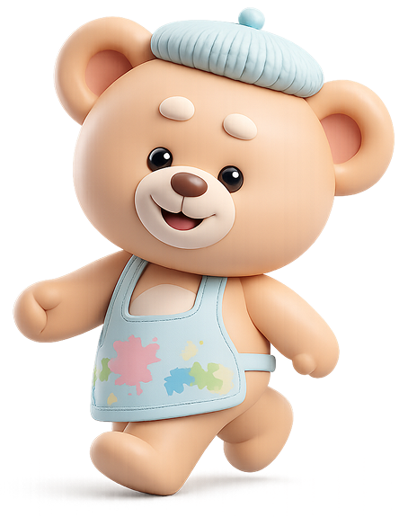
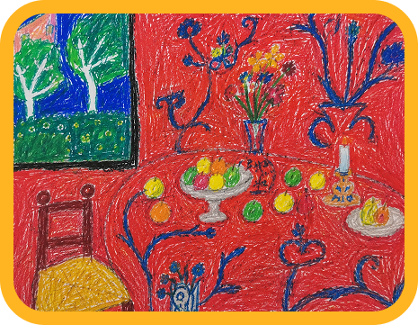
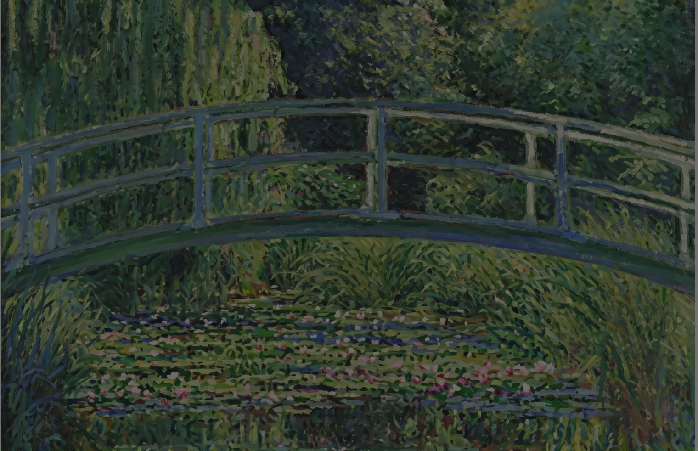
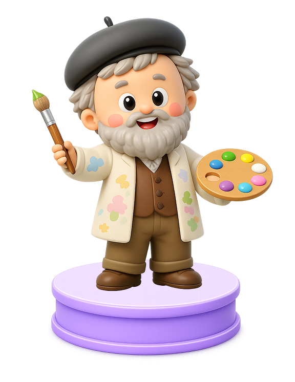
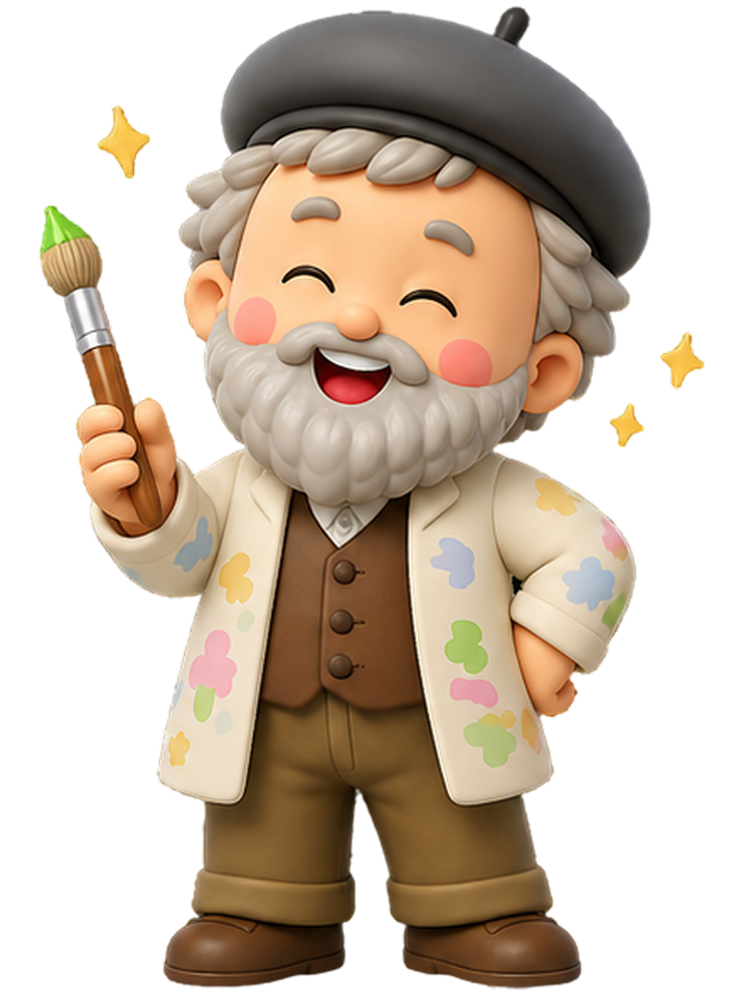

안녕, 하윤아!
오늘도 같이 그려볼까?








안녕, 하윤아! 오늘 우리가 만나볼 그림은 알록달록 예쁜
꽃들이 물 위를 둥둥 떠다니는 비밀 정원이에요.
이 그림을 그린 클로드 모네 할아버지는 꽃과 나무를 정말
사랑했어요.
어느 날, 할아버지는 마당에 커다란 연못을 만들고 예쁜
연꽃들을
심었답니다.
그런데 이 연꽃들은 조금 특별해요! 아침에 해가 쨍쨍 뜰 때, 점심에 구름이 지나갈 때,
그리고 해가 질 때마다 연못의 색깔이
마법처럼 계속
바뀌었거든요.
모네 할아버지는 그 비밀을 찾아내고 싶었어요.
그래서 할아버지는 돋보기안경을 쓰고, 연못 앞에 의자를 가져다 놓은 뒤 매일매일
그림을 그렸답니다.
"어라? 지금은 연못이 초록색이네?"
"와, 해가 지니까 이번엔 보라색이랑 분홍색으로 변했어!"
모네 할아버지는 매일매일 변하는 연못의 색깔을 놓치지 않으려고 붓을 바쁘게 움직였대요.
우리도 모네 할아버지처럼 멋진 비밀 정원의 색을 찾으러 출발해 볼까요?

짜잔! 난 모네 아저씨야!

✨ 정말 멋지게 그렸어요!
하윤이가 종이에 그린 수련이
모네 아저씨 그림만큼 아름다워요! 🌸
다음에도 같이 그려봐요!